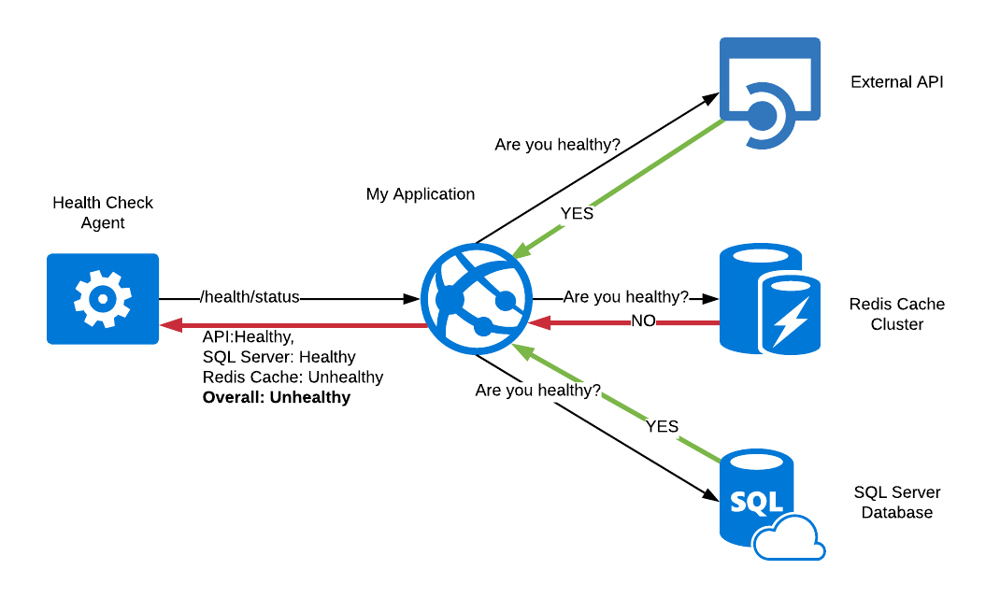
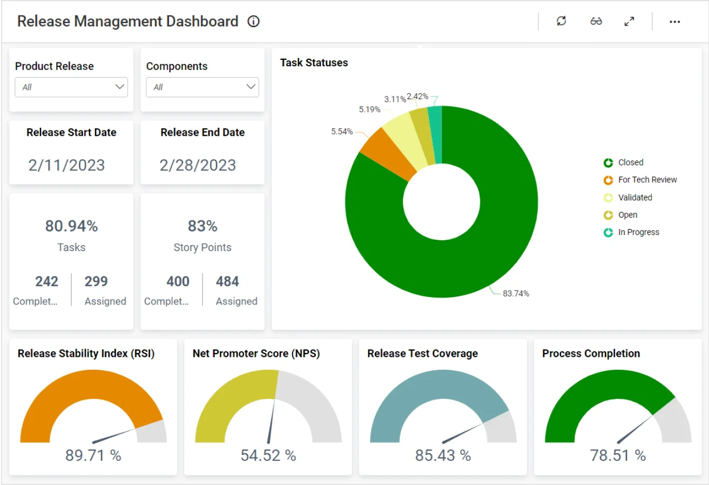

Monitor uptime, response time, service health, logs, and performance metrics.
HomeApplication health monitoring is a critical DevOps practice focused on ensuring that applications remain available, responsive, and reliable in production environments. Unlike infrastructure monitoring, application monitoring focuses on user-facing behavior and service-level health.
This page presents a sample application healthcheck dashboard used for educational purposes on the EZDevOps ThinkCentre platform. The metrics and charts shown here reflect real-world monitoring patterns commonly implemented in production DevOps systems.
In CI/CD-driven environments, frequent deployments can introduce risk. Continuous application monitoring ensures that deployments do not negatively impact system health and user experience.
Track application performance and detect errors early.


The charts below demonstrate how application metrics are visualized for Linux servers hosting the EZDevOps platform. These dashboards help DevOps teams identify anomalies, troubleshoot incidents, and maintain service reliability.
Track uptime percentage of critical applications.
Monitor average response times.
Active vs inactive services.
Error and event tracking.